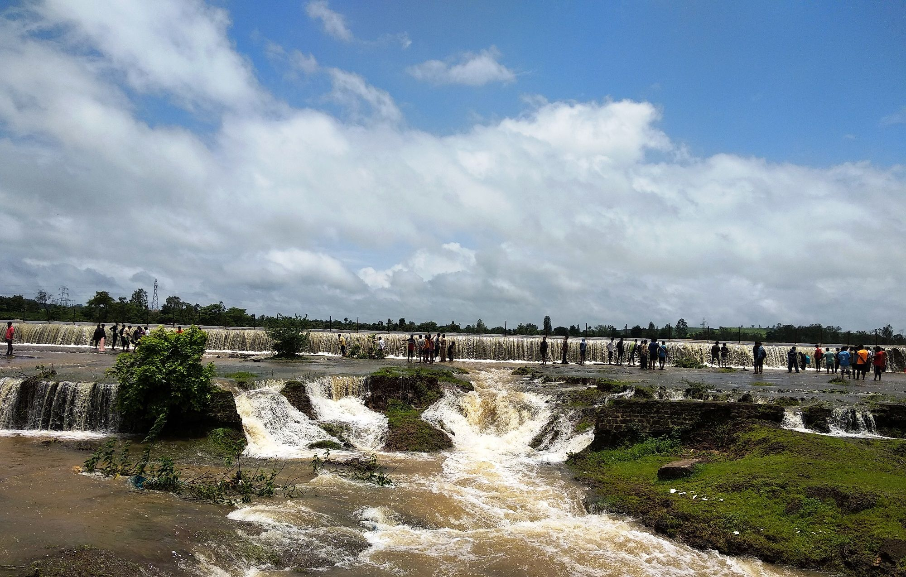

Panhala Fort |
Panhala is a city and a Hill station Municipal Council (3177 feet above sea level) 18 km northwest of Kolhapur, in Kolhapur district in the Indian state of Maharashtra. Panhala is the smallest city in Maharashtra and being a Municipal Council the city is developing rapidly. The city sprawls in the Panhala fort commands a panoramic view of the valley below. The main historical attraction here is the Panhala fort. There are many places of interest, each with its share of haunting anecdotes.
Panhala Fort
|
Rankala Lake |
Rankala Lake is on the western side of Ambabai temple , it is a popular evening spot and recreation centre. This lake was constructed by late Maharajah, Shri Shahu Chhatrapati. The Lake is surrounded by Chaupati and other gardens. In the backdrop stands majestic Shalini Palace. Shalini Palace is the only star-rated Palace Hotel in Maharashtra. Chaupati also brings memories of Chatak daar Bhel-Puri and Ragda-Patties and variety of food snacks. In past, Kolhapur was famous as a centre for Film Industry. Many Marathi movies, Hindi movies have been shot in studios in Kolhapur. ShantKiran Studio on Rankala Lake was shot in numerous movies. This studio was owned by V. Shantaram (V stands Vanakudre), gift to Indian Film industry. Today, those days in history is being remembered as golden past.
Rankala Lake
|
Rautwadi Falls |
Beautiful Waterfall with a very easy approach in Radhanagari , very safe and very much refreshing ! And the surrounding is lush green. It is surrounded by lush greenery of the nature.It offer picturesque natural views to visitors. One can enjoy the cool water, falling from a height of 100 ft, splashing on the rocks.
Rautwadi Falls
|
Kalmba Lake |
One of the most striking places to visit in Kolhapur is the Kalamba Lake that sprawls over 63 hectares.This is the major source of water for the entire city and the views that it extends are exceptional.
The lake originates from Katyayni hill and the soft flowing water comes close to the city. At this lake, at lot of migratory birds.flock in the winter season and adds to the charm of the place.
Kalmba Lake
|
 Dajipur |
Rankala Lake is on the western side of Ambabai temple , it is a popular evening spot and recreation centre. This lake was constructed by late Maharajah, Shri Shahu Chhatrapati. The Lake is surrounded by Chaupati and other gardens. In the backdrop stands majestic Shalini Palace. Shalini Palace is the only star-rated Palace Hotel in Maharashtra. Chaupati also brings memories of Chatak daar Bhel-Puri and Ragda-Patties and variety of food snacks. In past, Kolhapur was famous as a centre for Film Industry. Many Marathi movies, Hindi movies have been shot in studios in Kolhapur. ShantKiran Studio on Rankala Lake was shot in numerous movies. This studio was owned by V. Shantaram (V stands Vanakudre), gift to Indian Film industry. Today, those days in history is being remembered as golden past.
Dajipur
|